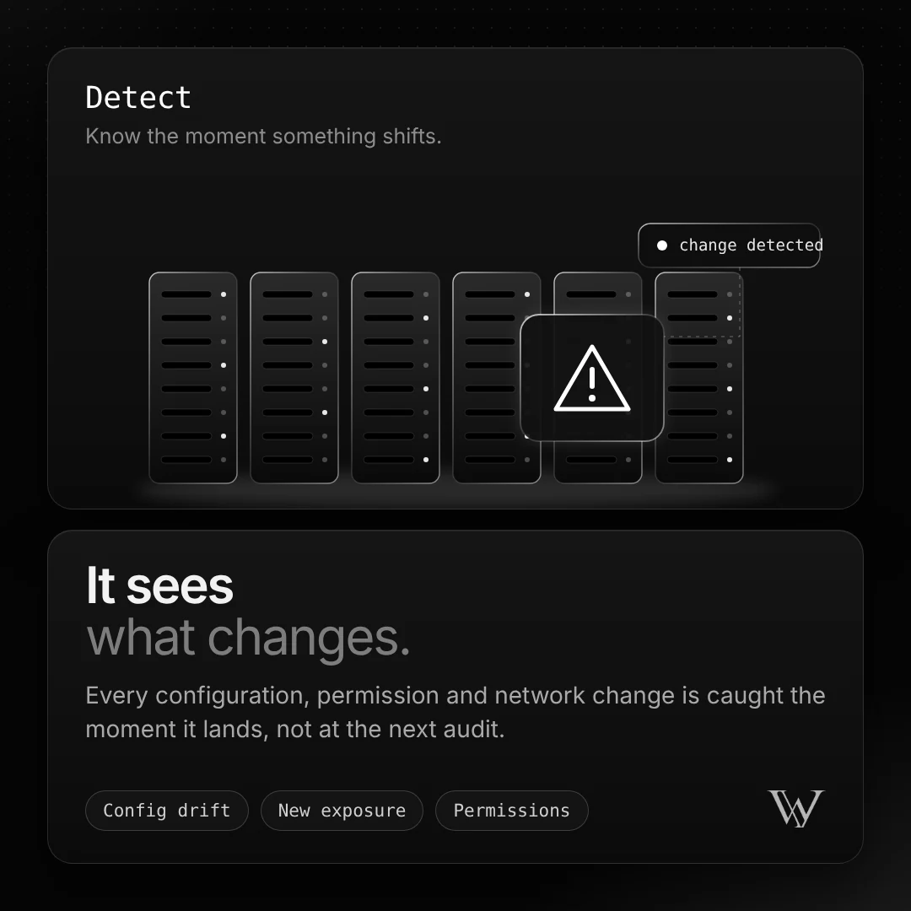

02 / Detect
It sees what changes.

Every configuration, permission and network change is caught the moment it lands, not at the next audit.
WCI compares the security state before and after each pull request, so the review starts from what actually moved.
Config driftNew exposurePermissions